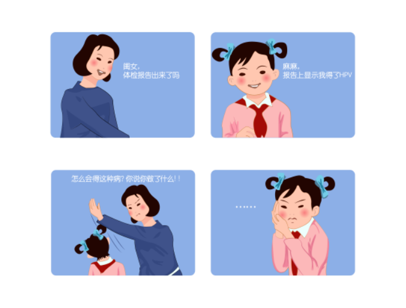
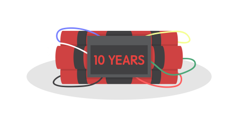
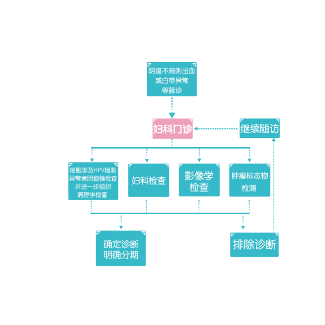
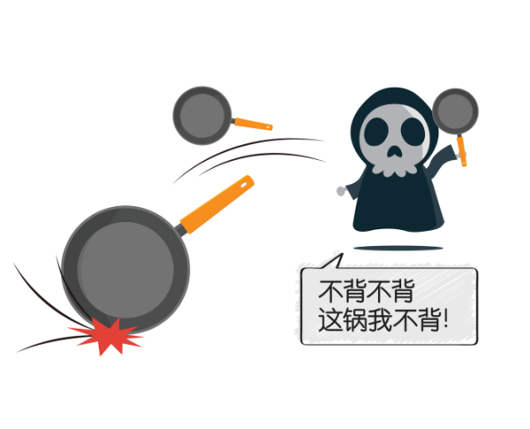

知识课堂
-

得了HPV就一定是坏女孩吗？
谈到HPV，许多人就认为一定是性生活不检点才会感染这种病毒。其实，即便只和男朋友一个人爱爱，也有可能感染HPV。如果一概而论，认为感染HPV的就是坏女孩，那可就冤枉了不少女孩呐~那么HPV究竟如何传播的呢？HPV病毒存在于日常环境中，传染途径除了主要有爱爱之外，也可通过皮肤接触传播，如卫生间、浴缸等。其实，HPV是每个女孩成长道路中的一道“劫难”。在国外，研究表明女性在她的一生中发生至少一次HPV感染的机率为85% ，而且感染HPV的女性中80%是在45岁以前感染的 。在我国，15～24岁的城市女性最有可能感染HPV，而因为没有症状导致不易被发觉，只有到医疗机构检查时才有可能发现。虽然HPV病毒在我们生活的环境中无处不在，这并不意味着我们对它就束手无策~~下面，到了重点科..
-

一张图告诉你：宫颈癌与HPV的前世今生
HPV与宫颈癌之间究竟有怎样的关联？得了HPV是否一定就会得宫颈癌？ 面对HPV与宫颈癌之间扑朔迷离的关系，女孩们总是急切地想弄明白。 憋着急，今天我们就通过简单的一张图带你了解宫颈癌与HPV的前世今生。 HPV16/18：不得不防的爆款病毒 HPV有很多类型，而其中HPV16/18是高危HPV中的“爆款”。它们与全球70%以上的宫颈癌相关，在中国这个数字更高达84.5%。感染了爆款HPV，就有可能发生癌前病变和宫颈癌。 更常见的HPV 16 vs 更可怕的HPV 18 不同类型的HPV导致不同类型的宫颈癌。约七八成的宫颈癌为鳞癌，主要由HPV16感染引起；另外一两成为腺癌，主要由HPV18感染引起。这两款爆款高危HPV中，HPV16比HPV18更常见，但HPV18的致癌作用比HPV16更大。 10年磨一癌 如果不幸感染了HPV 16/18，辣么女孩的未来可能会面临3种...
-

那些年，他们一起“追”的风
追星、追剧、追男神、追新番……新时代的追风少女们每天都有追不完的新鲜事儿。然而，追风可不是年轻人的特权哦，早在20世纪初，就有人在乐此不疲地追追追了，只不过他们追的是宫。颈。癌。 What？？？少女们避之不及的宫颈癌还有人敢去追？没错！没有专家们锲而不舍的追探，就没有今天宫颈癌致病元凶的真相大白。专家们是如何追的呢？跟随我们一起追追看吧！ 早在19世纪40年代，一位意大利医师从死亡登记资料分析中发现，患宫颈癌的妇女大多数为已婚者，未婚者很少，而修女几乎不患宫颈癌。因此，他认为结婚与否与宫颈癌的发生有着一定的关系。 20世纪50年代，人们开始将目光集中到家庭、婚姻、分娩和性生活上，企图在这里发现宫颈癌的蛛丝马迹。
-

一份来自HPV的自白书
Hi，大家好，我是HPV，我的中文名字叫人乳头瘤病毒。话不多说，先上自拍。喏，我长这样。 是不是很美丽？其实，我不单外表美，我的内在也很美哦！我的内在长这样↓ 跟你们人类一样，我也是有DNA哒！这2根成环的“链子”就是我的DNA，我的DNA具有很强的亲（chuan）和(ran)力(xing)，也是我与你们人类交朋友的“秘密武器”。我最喜欢年轻姑娘了，可她们貌似都不太喜欢我，一想到我就不寒而栗，在她们眼中，我就是糖衣炮弹，是坏人。说到这里，有必要向大家介绍下我的家族了。 我有一个超级大的伐木累，有超过100多位的兄弟姐妹，它们中有的比较调皮捣蛋，比如，HPV6、11、42、43、44等等，虽然它们接近人类，会带来一些与外生殖器湿疣等相关的疾病，但它们对人类没有太大的恶意，如果人类采取一些措施的话，它们会...
- 1
-
没想到，宫颈癌还有这么多面孔呢！
都说时间是把杀猪刀，历经不同的生长阶段，逆生长的不多，“放飞自我”的倒不少。曾经白衣翩翩的英俊少年如今变成胡子拉碴的邋遢大叔；曾经豆蔻年华的天真少女如今变成了只知柴米油盐的黄脸婆……可你知道吗？宫颈癌也有自己不同的“成长”阶段的！时间这把刀，在宫颈癌身上又留下了怎样的印记？宫颈癌又是如何放飞自我、有着哪些不一样的面孔呢？跟我一起来看看吧！通常情况下，病人在经过病理检查、被诊断为宫颈癌后，医生会通过各种检查——妇科检查、影像学检查（X线、B超）或内镜检查等来了解肿瘤影响的范围，确定宫颈癌成长到了哪个阶段，以此来为患者提供最佳的治疗方法并评估治愈的几率。不同阶段的宫颈癌长得也不一样哦，通常，医生所使用的宫颈癌分期为国际妇产科联盟（FIGO）分期，将其分为了4期：...
-

前方高能！一大波抗癌大军来了！
每个少女心中，都会有个盖世英雄，在自己遇到危险时，他会披着金甲圣衣、踩着七彩祥云出现在自己面前。然而，被宫颈癌缠身后才意识到，盖世英雄并不会出现……难道，就只能这样了吗？前方高能，一大波抗癌大军来拯救你了！首先，是抗癌大军中的先锋部队——手术治疗。它可以将子宫及其周围组织手术切除，主要针对的是早期宫颈癌患者。 紧接着，是抗癌大军中的特种部队——放射治疗。它适用范围广泛，搞不定的任务交给它就好，它可以利用放射线杀死肿瘤细胞，常常在中晚期宫颈癌患者身边可以看到它的身影。最后，是抗癌大军中的机动部队——化学治疗。什么时候需要它，它就会出现，利用化学药物杀灭肿瘤细胞。虽然，每个部队有自己不同的职责，在宫颈癌治疗中发挥主要作用的是先锋部队和特种部队。但部队总...
-

大家来“找茬”之宫颈癌诊断面面观
相信很多人都玩过大家来找茬的游戏吧？在神似的场景中寻找其中极其细微的差别，考验耐力也考验缜密鉴别力。其实，很多疾病（比如宫颈癌）的诊断，与找茬游戏有着异曲同工之妙哦。对于早期没有明显症状显现的宫颈癌，该如何进行诊断呢？今天，我就来为大家科普下，医生们是如何运用缜密的检测手段、面面俱到发现宫颈癌、诊断宫颈癌的。首先，来给大家看一下宫颈癌的诊断流程。从上面的流程图中可以看出，面对来势汹汹的宫颈癌，我们严阵以待，不给宫颈癌以可乘之机。那这些检查手段各自有哪些功能、它们之间又有着哪些不同？接下来就为大家详细解析下。包括视诊和触诊两种。1）视诊 应在充足照明条件下进行，直接观察外阴和通过阴道窥器观察阴道及宫颈。除一般观察外应注意癌浸润范围...
-

宫颈癌的自白：有些锅，我不背
Hi，姑娘们，我是宫颈癌，是你们口中的女性健康杀手。或许你没见过我，但听到我的名字也足以让你闻风丧胆。可是，我也很“委屈”，我也很“无辜”呀！不是洗白，今天我们就来聊一聊，剥夺了无数女性的生命，真的都是我的原因吗？首先，我不会无缘无故找上你们的，谁让你们先发出了“喜欢我”的信号呢？HPV感染：高危型HPV对我有着强大的吸引力，它是导致我与你相遇的罪魁祸首，尤其是HPV16和HPV18。性行为：如果你初次性生活过早（＜16岁）、性生活活跃、多个性伴侣、性伴侣又有多个性伴侣的话，就有可能吸引我来到你身边哦~口服避孕药：如果你长期口服避孕药的话，也会增加我看到你的几率。吸烟：吸烟会降低你的免疫力，当我接近你时，你会无力抵挡。以上这些，都有可能将我吸引至你身边...
-
一个细胞引发的“蝴蝶效应”
亚马逊河流的蝴蝶煽动了几下翅膀，美国德克萨斯就掀起了一场龙卷风；爱豆在北京开了场演唱会，上海的交通便陷入了瘫痪；今天早上没有吃包子，华尔街的股市就开始大跌……牵一发而动全身，你永远无法想象一个生活中的小细节会带来怎样的影响，就像你无法想象我们身体里的一个宫颈癌感染细胞，会引发社会上怎样的“蝴蝶效应”姑娘们可能都知道，宫颈癌会对女性生殖系统造成巨大的损害。然而，更恐怖的是，它还有转移的风险！宫颈癌生长以后可向邻近组织和器官直接蔓延，阴道、子宫体、盆腔组织、膀胱、直肠、锁骨、淋巴结、肺、肝、骨等，宫颈前后左右上下两侧的组织器官无一幸免，甚至还有转移至全身各处的风险！简直是肆无忌惮、无孔不入！...
-
小心！宫颈癌可能就在你身边！
如今，人与世间万物的距离越来越近了：和偶像只隔着一个手机屏幕的距离，和环游世界只隔着一张机票的距离，和山珍海味只隔着一份外卖的距离……那、和宫颈癌呢？不要逃避，不要觉得宫颈癌离你还很遥远，其实，宫颈癌很有可能就在你身边，不要等到查出CIN了再追悔莫及……可能你要问了，CIN是什么？在介绍CIN前，先来为大家科普下肿瘤的概念。人有好坏之分，肿瘤也有良性和恶性之别，良性肿瘤生长比较缓慢，在切除后很少复发；恶性肿瘤（也就是我们平常所说的癌症）生长比较快，切除后依旧有复发的风险...
-
不被女性接受的“第一”，细思极恐！
有女人的地方就有江湖，有江湖的地方就有排名……试问哪个女生不想成为学校里的第一精英，职场上的第一骨干，同辈中的第一榜样，爱豆身边的第一粉头……可惟独，有个“第一”她们却避之不及，那就是让她们谈之色变的宫！颈！癌！ 我们都知道，宫颈癌是最常见的妇科恶性肿瘤之一，位居女性生殖系统三大恶性肿瘤（宫颈癌、卵巢癌、子宫内膜癌）之首。 这个第一可不是凭空得来的哦，有数据有真相。 2015年，我国宫颈癌发病人数约为10万。其中城市为53200例，农村为45700例，平均每天约274人被诊断为宫颈癌。 在这些患者当中，45~59岁年龄组新发病例最多，为45700例，其次为30~44岁年龄组和60~74岁年龄组，分别为28200例和19000例。 除了发病率高，宫颈癌在我国的死亡率也不容小觑。因宫颈癌死亡人数约30,500例，其中城市为...
-
是什么让软妹子和女汉子都怕了？
身为新时代的新新女性，上得厅堂，下得厨房，杀得了木马，打得过流氓……简直无所不能！然而，不管是软妹子还是女汉子，在面对TA时，顿时气势全无。是什么让她们谈之色变？是什么让她们都怕了？是TA是TA就是TA，少年英雄小哪吒！哦不，女性杀手宫颈癌！在介绍宫颈癌之前，首先我来为大家科普下癌症是什么。癌症，又叫恶性肿瘤，是由身体内的异常细胞过度生长和分裂引起的。当我们身体里的细胞受到环境中一些毒素长时间影响后，再加上自身免疫力减弱，我们体内就会出现一些不正常的细胞。这些不正常的细胞生长能力特别强，生长速度特别快，没有控制地生长就形成了肿瘤。其中恶性的肿瘤，就是我们通常所说的癌症。癌症的恶性细胞更容易扩散出去，用外科手术切除后，部分病人依旧有复发的风险...
-

20多岁的女孩子们，我想对你说
20多岁的女孩子们，每天都有很多脑洞大开的想法。比如，嫁给自己的爱豆啦，在短期内达成小目标挣到一个亿啦，任何场合都自带女主光环啦等等。风华正茂的年纪，美好的人生才刚刚开始，照道理来讲，我们应该互相打气……可此时我却想对你说些有点丧的话：你有没有想过，20多岁也有可能会得宫颈癌…… 不要觉得癌症离你很远，也不要觉得这是危言耸听，在中国，宫颈癌的发展正呈现出年轻化的趋势。有数据有真相。↓ 我国一项1988~2002年关于宫颈癌发病率和死亡率肿瘤登记数据的分析显示，1998~2002年我国25~39岁女性的宫颈癌发病率比1988~1992年增加了5倍多！ 同时，一份上海肿瘤医院1991~2001年的资料分析显示，我国35岁以下宫颈癌的新发病例总体呈增加趋势。 （分别为1.2%、1.2%、4.3%、4.2%、4.6%、4.5%、7.3...
- 1